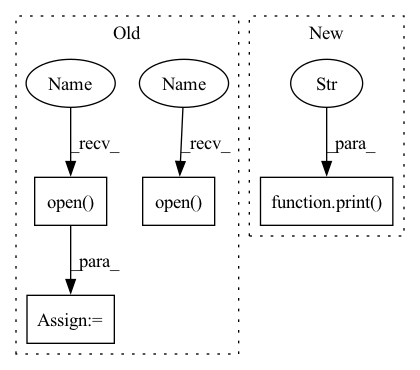

Pattern ID :18118
Before Change
hr_image_path = os.path.join(config.hr_dir, file_names[index])
print(f"Processing `{os.path.abspath(lr_image_path)}`...")
lr_image = Image.open( lr_image_path) .convert("RGB")
hr_image = Image.open( hr_image_path) .convert("RGB")
// Extract RGB channel image data
lr_tensor = imgproc.image2tensor(lr_image, range_norm=False, half=True).to(config.device).unsqueeze_(0)
hr_tensor = imgproc.image2tensor(hr_image, range_norm=False, half=True).to(config.device).unsqueeze_(0)
// Only reconstruct the Y channel image data.
with torch.no_grad():
sr_tensor = model(lr_tensor).clamp_(0, 1)
// Cal PSNR
sr_y_tensor = imgproc.convert_rgb_to_y(sr_tensor)
hr_y_tensor = imgproc.convert_rgb_to_y(hr_tensor)
total_psnr += 10. * torch.log10(1. / torch.mean((sr_y_tensor - hr_y_tensor) ** 2))
sr_image = imgproc.tensor2image(sr_tensor, range_norm=False, half=True)After Change
def main() -> None:
// Initialize the super-resolution model
model = Generator().to(config.device)
print("Build ESRGAN model successfully." )
// Load the super-resolution model weights
checkpoint = torch.load(config.model_path, map_location=lambda storage, loc: storage)
model.load_state_dict(checkpoint["state_dict"])In pattern: SUPERPATTERN
Frequency: 3
Non-data size: 4
Instances Fragment ID: 59399282
Project Name: lornatang/esrgan-pytorch
Commit Name: 087e0c9bc621989889918b52b7c0dba9485c5fd6
Time: 2022-03-06
Author: liuchangyu1111@gmail.com
File Name: validate.py
M Class Name: AnonimousClass
N Class Name: AnonimousClass
M Method Name: main(0)
N Method Name: main(0)
M Parent Class:
N Parent Class:
M File Name: validate.py
N File Name: validate.py
M Start Line: 28
M End Line: 82
N Start Line: 30
N End Line: 91
Before Change
hr_image_path = os.path.join(config.hr_dir, file_names[index])
print(f"Processing `{os.path.abspath(lr_image_path)}`...")
lr_image = Image.open( lr_image_path) .convert("RGB")
hr_image = Image.open( hr_image_path) .convert("RGB")
// Extract RGB channel image data
lr_tensor = imgproc.image2tensor(lr_image, range_norm=False, half=True).to(config.device).unsqueeze_(0)
hr_tensor = imgproc.image2tensor(hr_image, range_norm=False, half=True).to(config.device).unsqueeze_(0)
// Only reconstruct the Y channel image data.
with torch.no_grad():
sr_tensor = model(lr_tensor).clamp_(0, 1)
// Cal PSNR
sr_y_tensor = imgproc.convert_rgb_to_y(sr_tensor)
hr_y_tensor = imgproc.convert_rgb_to_y(hr_tensor)
total_psnr += 10. * torch.log10(1. / torch.mean((sr_y_tensor - hr_y_tensor) ** 2))
sr_image = imgproc.tensor2image(sr_tensor, range_norm=False, half=True)After Change
// Load the super-resolution model weights
checkpoint = torch.load(config.model_path, map_location=lambda storage, loc: storage)
model.load_state_dict(checkpoint["state_dict"])
print(f"Load ESRGAN model weights `{os.path.abspath(config.model_path)}` successfully." )
// Create a folder of super-resolution experiment results
results_dir = os.path.join("results", "test", config.exp_name)
if not os.path.exists(results_dir): Fragment ID: 59399283
Project Name: lornatang/esrgan-pytorch
Commit Name: 087e0c9bc621989889918b52b7c0dba9485c5fd6
Time: 2022-03-06
Author: liuchangyu1111@gmail.com
File Name: validate.py
M Class Name: AnonimousClass
N Class Name: AnonimousClass
M Method Name: main(0)
N Method Name: main(0)
M Parent Class:
N Parent Class:
M File Name: validate.py
N File Name: validate.py
M Start Line: 28
M End Line: 82
N Start Line: 30
N End Line: 91
Before Change
hr_image_path = os.path.join(config.hr_dir, file_names[index])
print(f"Processing `{os.path.abspath(lr_image_path)}`...")
lr_image = Image.open( lr_image_path) .convert("RGB")
hr_image = Image.open( hr_image_path) .convert("RGB")
// Extract RGB channel image data
lr_tensor = imgproc.image2tensor(lr_image, range_norm=False, half=True).to(config.device).unsqueeze_(0)
hr_tensor = imgproc.image2tensor(hr_image, range_norm=False, half=True).to(config.device).unsqueeze_(0)
// Only reconstruct the Y channel image data.
with torch.no_grad():
sr_tensor = model(lr_tensor).clamp_(0, 1)
// Cal PSNR
sr_y_tensor = imgproc.convert_rgb_to_y(sr_tensor)
hr_y_tensor = imgproc.convert_rgb_to_y(hr_tensor)
total_psnr += 10. * torch.log10(1. / torch.mean((sr_y_tensor - hr_y_tensor) ** 2))
sr_image = imgproc.tensor2image(sr_tensor, range_norm=False, half=True)After Change
total_psnr += 10. * torch.log10(1. / torch.mean((sr_y_tensor - hr_y_tensor) ** 2))
print(f"PSNR: {total_psnr / total_files:4.2f}dB.\n" )
if __name__ == "__main__":
main() Fragment ID: 59399286
Project Name: lornatang/srgan-pytorch
Commit Name: 231bd74d21d7f532fd746f4a1cb8fb3bc008c933
Time: 2022-03-03
Author: liuchangyu1111@gmail.com
File Name: validate.py
M Class Name: AnonimousClass
N Class Name: AnonimousClass
M Method Name: main(0)
N Method Name: main(0)
M Parent Class:
N Parent Class:
M File Name: validate.py
N File Name: validate.py
M Start Line: 28
M End Line: 82
N Start Line: 33
N End Line: 91
Before Change
outfile = f"{audio_super}{dir}/{dir}.wav"
data= []
for infile in audioFiles:
w = wave.open( infile, "rb")
data.append( [w.getparams(), w.readframes(w.getnframes())] )
w.close()
output = wave.open( outfile, "wb")
output.setparams(data[0][0])
for i in range(len(data)):
output.writeframes(data[i][1])
output.close()After Change
os.rename(audio_files[0], str(os.path.dirname(audio_files[0]))+ "/" + str(os.path.basename(os.path.dirname(audio_files[0]))) + audio_files[0][-4:])
if len(audio_files) == 0:
print("Missing audio in your audio folder." )
sys.exit()
// converts video to frames; outpouts in 0000x.png to framesOutPath location
def vid2frames(vid_path, frames_out_path): Fragment ID: 59399284
Project Name: johngettings/lihq
Commit Name: 5c02df6c1bfeb357a3c7a3c073a349eb534a983f
Time: 2022-05-24
Author: johngettingsai@gmail.com
File Name: procedures/av_scripts.py
M Class Name: AnonimousClass
N Class Name: AnonimousClass
M Method Name: combine_audiofiles(2)
N Method Name: combine_audiofiles(2)
M Parent Class:
N Parent Class:
M File Name: procedures/av_scripts.py
N File Name: procedures/av_scripts.py
M Start Line: 24
M End Line: 37
N Start Line: 24
N End Line: 47